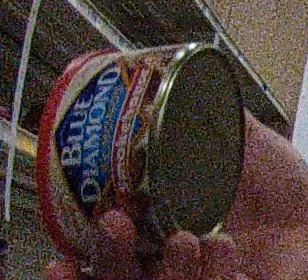
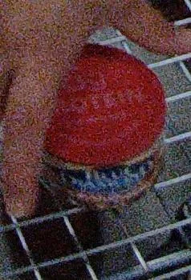
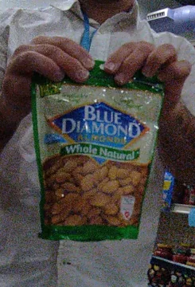
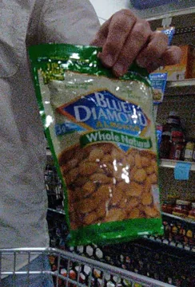
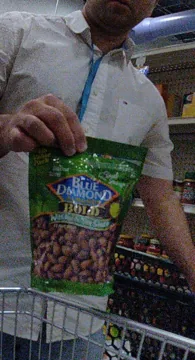

A Transferable Variant Signal
That Grocery Retrieval Cannot Reach

18th Asian Conference on Computer Vision (ACCV 2026)
Oral PresentationAbstract
Automated grocery checkout requires matching a store photograph to the catalog entry for the exact product. Two products of the same brand may differ only in flavor, size, or packaging. We ask whether a retrieval model can distinguish those variants in a photo even when it selects the wrong written description. On GroceryVision, we use SigLIP2, a pretrained vision-language model with separate encoders for photos and text. With the encoder weights fixed, the correct description ranks first for 81.3% of test photos from training brands. Given the brand, a linear classifier trained on the image features alone identifies the variant with 97.1% balanced accuracy, which gives each variant equal weight within its brand. In a separate fine-tuning experiment, SigLIP2’s image encoder achieves higher accuracy on new brands than the frozen encoder at the lower of two learning rates and lower accuracy at the higher rate. To test subspace transfer, we keep both encoders fixed, learn directions from the visual differences between variants of training brands and use them to compare photos of brands excluded from that fit with catalog descriptions. For all nine models tested, directions learned from correct variant labels yield higher average retrieval accuracy than directions learned after shuffling those labels within each training brand. For SigLIP2 and MobileCLIP-B, most of the gain comes from avoiding matches to the wrong brand.
TLDR
A grocery retrieval model can return an incorrect variant of the correct brand. We used the gopt-384 version of SigLIP2, a vision-language model, to extract image features from store photos and text features from catalog descriptions. A classifier could identify varieties from the image features alone when it knew the brand. Could the distinctions between one brand’s varieties help identify products from another brand?
From the training brands’ photos, we learned 64 directions, each a weighted combination of features. We then compared photos of new brands with written catalog descriptions using those same 64 measurements. With all 409 descriptions available, SigLIP2 ranked the exact product first with 51.7% average accuracy using directions learned from correct variety labels and 38.1% using directions learned after shuffling those labels within each training brand. Learning from the correct labels improved accuracy by 13.6 percentage points across the full catalog. When we ranked only descriptions from the photographed product’s own brand, the gain on the same photos was 3.9 points. Most of the improvement came from avoiding matches to a different brand.
Three roast descriptions ranked against the mean of ten Sumatra photo vectors
Correct training labels
- Sumatra0.4920
- Pike Place0.4663
- Breakfast Blend0.4373
Shuffled training labels
- Pike Place0.4608
- Sumatra0.4409
- Breakfast Blend0.3625
Motivation
An automated grocery checkout system must identify the specific product a shopper selects. Its multimodal product retrieval (MPR) model uses an in-store photograph as the query and written product descriptions as the catalog. Variants of the same brand can share a logo and package design. The distinction between them may depend on a single word, and a shopper’s hand can obscure that word in the photograph. [1]
In an earlier GroceryVision study, we tested 190 vision-language models with their pretrained weights fixed. SigLIP2-gopt-384 ranked the correct description among its first five for 94.5% of photos (Recall@5) and first for 77.0% (Recall@1). The 17.5 percentage points between these rates count photos for which the correct description ranked second through fifth. In the present study we report separate first-match rates for photos of training brands and of brands excluded from training. [2]
Given a photograph of Campbell’s Creamy Tomato soup, SigLIP2 ranks the description for Chicken Noodle first and Creamy Tomato second. Both descriptions name the right brand. Figure 1 motivates two tests. First, can a classifier identify the variety from the image features alone? Second, can visual differences learned from the varieties of one brand help match photos to descriptions of products from other brands?
Shelf camera and catalog retrieval
Video explainer
Read the transcript
A shopper buys tomato soup. Imagine that the receipt says chicken noodle. Could the model tell which flavor the camera saw? Amazon's Just Walk Out uses cameras and shelf sensors to follow the items shoppers take. Researchers can study a shopping trip inside a simulated store, like Sari Sandbox. Virtual try-on shows shoppers how a pair of glasses would look on their own face. We studied SigLIP2, a vision-language model that matches store photos to written product descriptions. For this soup, the description it chose named the right brand and the wrong flavor.
We present A Transferable Variant Signal That Grocery Retrieval Cannot Reach.
One wrong flavor leaves us with three questions. First, could the model distinguish the flavors in a photo even when it chose the wrong description? Second, can a distinction learned from one brand help identify a product from a different brand? Third, how much does that help when the only choices are flavors of the same brand?
Look at this can. It is Campbell's Creamy Tomato. The other can is Chicken Noodle. A vision encoder turns a photo into a list of numbers. These measurements are called image features. SigLIP2 also has a text encoder. It turns each written description into a list of text features. The model ranks the descriptions by how closely each text vector aligns with the photo vector. For the tomato soup photo, Chicken Noodle ranked first. The model got the brand right and the flavor wrong. In an earlier GroceryVision study, SigLIP2 ranked the correct item among the first five descriptions for 94.5 percent of photos. It ranked the correct item first for 77 percent.
The photo passes through a vision encoder. We freeze its weights. The snowflake means that the same photo will give the same measurements throughout the experiment. We train a simple classifier to predict the flavor from those image features. This is a linear probe. Only its weights change. It never reads the catalog. We test the probe on other photos of the same brands. Its score gives each variety equal weight within its brand. The probe reaches 97.1 percent balanced accuracy with correct training labels. Shuffling the labels within each training brand lowers its score to about 35 percent, close to guessing. This result shows that the encoder retained information about the variety. Matching a photo to a description can still give the wrong flavor.
Could a distinction learned from one brand help with another? We began with brands for which we had labeled photos. First, we average the photo measurements for each variety. Then we average those variety measurements within each brand. The arrow from the brand average to one variety shows how that variety differs from the rest of its brand. Now imagine laying a ruler along those arrows. Along some directions the varieties spread apart. We kept 64 directions that captured the most variation. Together they form the variant subspace. The calculation is called singular value decomposition. The columns of V give directions in the image feature space. Sigma measures how much the training varieties vary along each direction. U gives the relative weight of each training variety along each direction.
Does it matter which photos we group as the same variety? To find out, we repeat the calculation using the same training photos. We shuffled the labels among photos of the same brand. A tomato photo could now carry a chicken noodle label. The photos stayed in place, and each name appeared just as often. We learn a second set of 64 directions from the shuffled training labels. We test both sets on the same photos, whose correct labels we keep for scoring.
Now we try the directions on three coffee roasts. No Starbucks photo or description was used to learn these directions. We project the SigLIP2 image vector for each coffee photo and the text vector for each description onto the same 64 directions. It is like measuring both with the same set of rulers. Learning those directions on other brands and applying them here is subspace transfer. These are two real photos of Sumatra. With the original labels, the first matches Sumatra. The second matches Breakfast Blend. The roast is the same in both photos. Each of these ten photos shows Sumatra. With the original training labels, nine out of ten were correct. With shuffled training labels, zero out of ten were correct. The model predicted Pike Place for every photo. We chose this coffee example because correct training labels made the largest difference among the 28 cases we examined. To see whether the result holds more broadly, we look at all the test brands with at least two varieties.
Each row is a vision-language model. We fit directions on one group of brands and test on other brands. We calculate first-match accuracy for each test brand and average equally across brands, then across ten trials. SigLIP2 compares its image and text features along 64 directions. Average first-match accuracy is 51.7 percent with directions learned from correct training labels and 38.1 percent with directions learned from shuffled labels. The last column uses all the original image and text features. Now take the same test photos and remove every other brand from the catalog. For a coffee photo, the choices are now only the roasts of that coffee brand. Correct training labels improve SigLIP2’s average first-match accuracy by 13.6 percentage points over shuffled labels across the full catalog. For the same photos, the gain is 3.9 points when we rank only the correct brand’s descriptions. MobileCLIP gains 4.5 points across the full catalog and 1.2 within the brand. For these two models, most of the gain came from distinguishing brands.
Let us return to the three questions. Did the encoder record the flavor? Yes. A simple classifier could read the variety from a photo even when matching it to text failed. Did the directions transfer? Yes. On brands excluded from the fit, all nine models ranked the correct description first more often, on average, with correct training labels than with shuffled labels. What if every choice came from the correct brand? For SigLIP2 and MobileCLIP, about 30 percent of the gain over shuffled labels remained. That is the part that helped distinguish varieties of the same brand.
A receipt needs the exact variety. To evaluate a checkout model, give it several flavors of the same brand. That test reveals errors a whole-catalog score can hide. For representation learning, a wrong answer leaves two possibilities. The encoder may have missed the difference, or the comparison with text may have missed it. Testing the image on its own lets us distinguish them. In this study, the encoder retained a distinction that catalog matching often missed. These are the same ten Sumatra photos and the same written descriptions. Switching from directions learned with shuffled labels to directions learned with correct labels changes the closest roast for the average photo vector from Pike Place to Sumatra. Thank you for listening.
Film sources and credits
- Automated checkout
- Amazon describes how cameras and shelf sensors associate items with a shopper’s cart. Andy Li photographed the ceiling cameras at an Amazon Go store in 2018. Just Walk Out. Camera photograph (CC0).
- A virtual grocery store
- The walkthrough comes from Gajo et al., Sari Sandbox: A Virtual Retail Store Environment for Embodied AI Agents (ICCV Workshops, 2025). The original walkthrough was trimmed and resized under the Apache License 2.0.
- Virtual eyewear try-on
- Warby Parker’s virtual try-on previews eyeglasses on a shopper’s face. For the film, we illustrate the technique by tracking a moving portrait by Andy Barbour. The model is Sunglasses Khronos by Eric Chadwick, © 2024 Darmstadt Graphics Group GmbH, adapted for fit, materials, and lighting. Warby Parker Virtual Try-On. Original portrait (Pexels license). 3D model (CC BY 4.0).
- Shopping and receipt footage
- Kampus Production filmed the shoppers entering the store, selecting groceries, and outside with their purchases. Shelf inspection was filmed by Gustavo Fring and the receipt close-up by Mizuno K. Pexels license.
- The soup and coffee experiments
- E. G. Maminta and R. O. Atienza, A Transferable Variant Signal That Grocery Retrieval Cannot Reach (ACCV 2026). Figure 1 shows the tomato soup error. Figure 2 gives the selected coffee example. The 3D animation shows the measured angles between the mean of ten Sumatra photo vectors and the text vectors for two roasts. Figure 3 compares directions learned from correct and shuffled training labels. The nine-model table gives the underlying retrieval accuracies averaged over ten assignments of brands to training and testing. Supplementary experiments.
- The shortlist result
- E. G. Maminta and R. O. Atienza, What Matters for Grocery Product Retrieval with Open Source Vision Language Models (ICPR 2026). The chart gives the percentage of GroceryVision photos for which SigLIP2-gopt-384 ranked the exact product first or among its first five choices.
- Reading the image features
- G. Alain and Y. Bengio describe linear probes in Understanding Intermediate Layers Using Linear Classifier Probes (2016). The soup example shows an image-only probe identifying the variety in a photo excluded from its training set. The accompanying 97.1% is the balanced accuracy across brands reported in Table 1, with each variety given equal weight within its brand.
- Product photographs
- The soup, almond, juice, and coffee images come from The 4th GroceryVision Challenge, Track 2 (2025), resized under CC BY-NC 4.0. The soup photos illustrate how shuffling preserves the number of labels of each variety.


How image-to-text retrieval ranks catalog entries
SigLIP2-gopt-384 is the vision-language model used in this example. Its image encoder turns the store photo into a vector, a list of numbers that represents the image. Its text encoder produces a vector in the same space for each written product description. For GroceryVision we used Qwen3.6-27B to write one description per product from its catalog fields and one store photo. We encoded those descriptions once. For a new query photo, SigLIP2 ranks the descriptions by cosine similarity, which measures how closely each text vector points in the direction of the image vector. The description with the highest score determines the predicted product. [3] [4] Supplement, §S1.
Variant classification from frozen image features
We train one linear probe per brand. Given a photo from a known brand, this classifier uses a weighted sum of SigLIP2’s image features to score each of that brand’s variants. Only the classifier weights are trained. The image encoder stays fixed, and the classifier never sees the catalog descriptions. We evaluate it on photos excluded from fitting the classifier. [5]
The example below uses Smokehouse, Whole Natural, and Wasabi & Soy Sauce almonds from Blue Diamond. We train one classifier with the correct variety labels. For the control with shuffled labels, we randomly redistribute those labels among the same 18 photos, keeping six assignments per variety, and train a second classifier. We score both classifiers against the correct labels for the same twelve test photos.
Training set (18 photos)
Each row groups photos by their assigned training label.
Smokehouse






Whole Natural





Wasabi & Soy Sauce



Prediction on a photo excluded from training

Photographed variety
Smokehouse
Classifier’s prediction
Smokehouse
The classifier identifies 12 of 12 test photos correctly when trained on correct variety labels and 5 of 12 when trained on shuffled labels.
Probe fitting and evaluation
For each variety we used six photos for training and four for testing. We used the training set to standardize the features, then fitted multinomial logistic regression with either the original labels or one random permutation of those labels. This example illustrates the procedure for one brand. Table 1 reports the benchmark results across brands and three runs.
On the benchmark, the image-only probe achieved 97.1% balanced accuracy. We computed accuracy for each variety, averaged across varieties within a brand, then averaged across brands. The probe knew the brand and chose among its varieties. In the separate retrieval test, SigLIP2 compared each photo from a training brand with descriptions from every brand. The correct product ranked first for 81.3% of those photos. The probe result shows that the image features contain information about variety. The retrieval result measures whether the comparison with text uses that information to identify the exact product. Paper, Table 1.
What is subspace transfer?
We use the labeled photos of training brands to estimate directions in SigLIP2’s feature space. First, we average the normalized image vectors for each product. Then, for each brand, we average its product vectors, giving every variety equal weight. Subtracting that brand average from each product vector leaves the visual differences between varieties of the same brand. We combine these differences across training brands and find the directions along which they vary most. Those directions span what we call the variant subspace.
Subspace transfer means using directions learned from one group of brands to identify products from other brands. We take a photo of a product from a brand excluded from the fit. We project its image vector and the text vector of each candidate description onto the same directions. A projection gives the coordinates along those directions. We scale each projected vector to unit length and rank descriptions by cosine similarity. The number of directions retained is the rank. Paper, §4.2.
Mean image features per product
Each small mark represents one store photo. Each large mark is the mean image vector of ten photos of one variety. Circles mark Blue Diamond almonds and squares mark Ocean Spray juice.
A SigLIP2 image vector has 1,536 coordinates. The plane shows the first two directions learned from training brands. We chose the depth axis separately to show the separation between the Blue Diamond and Ocean Spray brand averages.
Interpretation of U, Σ, and V
In the matrix D, each row is a training product’s mean image vector minus its brand average. Each column is one image feature coordinate. We factor this matrix as
D = U Σ VT.
- V
- Each column of V is one direction in the original image feature space. The directions are mutually perpendicular. We use those same directions to project a test photo and each catalog text vector.
- Σ
- The diagonal contains the singular values in descending order. A larger value indicates more variation along the corresponding direction.
- U
- Each row gives a training variant’s signed weights along the directions. The corresponding row of UΣ gives its coordinates relative to its brand mean.
The first k columns of V define the rank-k subspace. At test time we project the original image and text vectors directly onto these directions, without subtracting a training mean. We normalize each projected vector to unit length before computing cosine similarity. Supplement, §S2.
Within-brand retrieval of coffee variants
Can directions learned from other brands distinguish three Starbucks roasts? We fitted two sets of directions using SigLIP2 image features from the same training photos. One used the correct variety labels. For the other we randomly reassigned the labels within each brand, preserving the number of photos assigned to each variety. Starbucks was excluded from both fits. Choose a test photo, then compare how the two sets of directions rank either the three roast descriptions or the entire catalog.

Ranked descriptions
For this photo, the correct description (Sumatra) ranks 1 of 3.
- Sumatra 0.4415
- Breakfast Blend 0.4398
- Pike Place 0.4091
View the top-ranked description
The product is a white bag of Starbucks Sumatra coffee featuring a green logo and a dark label with gold text.
Across all three roasts, the correct roast ranked first for 29 of the 30 individual photos using 64 directions learned with correct labels. It ranked first for 16 of 30 with the shuffled labels displayed here. For this example we chose the shuffled run whose accuracy was closest to the average of ten shuffles. Figure 2 shows the brand and trial with the largest within-brand gain among 28 eligible cases. The benchmark table below averages across the eligible test brands. Paper, Figure 2.
Subspace transfer to new brands
For every test photo, we asked how often the exact product ranked first. We ranked the same photos twice. In the first test, each photo could match any of the 409 catalog descriptions. In the second, the candidates were limited to products of the correct brand. For a Starbucks photo this removes every other brand from the ranking and leaves the model to identify the roast.
In each brand split, we assign entire brands to training, validation, or testing. All products from a brand stay together. Training brands supply the labeled photos used to learn the directions. Validation brands are set aside for model selection. Test brands supply the photos used to measure transfer. A “new brand” is one whose photos were excluded when fitting the directions in that trial. Within each trial we calculate first-match accuracy for each test brand with at least two products and give each brand equal weight. We then average the scores across ten brand splits.
For each of nine vision-language models, we extracted image and text features with that model’s own frozen encoders. We compared two sets of 64 directions learned from the same training photos. One used correct variant labels. For the control, we shuffled the labels within each training brand five times, fitted 64 directions after each shuffle, and averaged their scores. Across the full catalog, every model achieved higher average Recall@1 with correct labels. For SigLIP2-gopt-384, the gain over shuffled labels was 13.6 percentage points across all descriptions and 3.9 points within the correct brand. For MobileCLIP-B, correct labels added 4.5 points across the full catalog and 1.2 points within the correct brand. Paper, Figure 3. [6]
How often did the correct product rank first?
| Model | Correct training labels | Shuffled training labels | All features, no projection |
|---|---|---|---|
| SigLIP2- | 51.7% | 38.1% | 73.6% |
| MobileCLIP- | 50.1% | 45.6% | 63.8% |
| PE- | 53.0% | 43.4% | 75.0% |
| SigLIP2- | 50.9% | 41.8% | 71.6% |
| ConvNeXt- | 39.6% | 32.1% | 58.8% |
| EVA02- | 39.2% | 31.7% | 58.2% |
| ViTamin- | 50.5% | 44.3% | 64.3% |
| ViT- | 41.1% | 35.1% | 64.5% |
| ViT- | 38.0% | 32.1% | 60.5% |
Correct training labels help most when the model must also identify the brand
Recall@1 with correct training labels minus Recall@1 with shuffled training labels (percentage points)
SigLIP2-gopt-384
MobileCLIP-B
Why can a fit based on differences within a training brand help distinguish different brands? A direction that separates two varieties of one brand can also separate products from two other brands. Repeating the ranking with only the correct brand’s descriptions removes the opportunity to correct a wrong-brand match. On SigLIP2 and MobileCLIP-B, about 30% of the original gain over shuffled labels remained. This experiment measures the effect on retrieval. Identifying which visual attribute accounts for a direction requires a separate test. Paper, §4.2.
Effect of subspace rank on retrieval
The rank is the number of learned directions onto which we project both image and text vectors. The table compares directions learned with correct training labels, directions learned after shuffling the labels, and the same number of randomly chosen directions. Increasing the rank from 16 to 128 improves average accuracy on new brands for SigLIP2 and MobileCLIP-B under both label conditions. Using all dimensions of the original image and text vectors gives the highest accuracy for each model.
| Features used for matching | Correct first match (Recall@1) ↑ |
|---|---|
| Directions from correct training labels | 51.7% |
| Directions from shuffled training labels | 38.1% |
| Random directions | 8.8% |
| All image and text features (no projection) | 73.6% |
Across the full catalog, SigLIP2-gopt-384 averages 51.7% correct first matches with 64 directions learned from correct labels and 38.1% with 64 directions learned from shuffled labels.
Generalization after fine-tuning
We trained a linear map to align SigLIP2 image vectors with the descriptions of training products. On new photos of training brands, it raised first-match accuracy from 81.3% to 98.9%. On brands excluded from training, accuracy fell from 78.7% to 58.3%. We also updated all weights of the image encoder while keeping the text encoder fixed. Against the same 78.7% baseline for new brands, this fine-tuning reached 83.9% at the lower learning rate and 72.1% at the higher one. The rate sets the size of each weight update. ProxyNCA, which trains the image encoder using a learned reference vector for each training product, exceeded the frozen baseline at both rates. [7]
| Image model | Learning rate | Brands used for training Recall@1 ↑ | Brands set aside for testing Recall@1 ↑ |
|---|---|---|---|
| Frozen SigLIP2 | — | 81.3% | 78.7% |
| Linear image feature map (GA) | — | 98.9% | 58.3% |
| Full fine-tuning | 5 × 10−5 | 99.6% | 72.1% |
| Full fine-tuning | 2 × 10−5 | 98.1% | 83.9% |
| ProxyNCA | 5 × 10−5 | 90.5% | 84.5% |
| ProxyNCA | 2 × 10−5 | 89.9% | 87.6% |
We chose the lower learning rate after inspecting results on test brands in the first three trials. Those three trials are included in the reported average. Paper, §5. Download the table (CSV).
Implications for grocery retrieval
When retrieval selects the wrong product, we can test the image encoder separately from the comparison with text. In our experiments a classifier could read variant identity from SigLIP2’s frozen image features even when the photo matched another variant’s description. The text features offer one explanation. In the first trial, two descriptions of different variants of the same brand had a mean cosine similarity of 0.733, compared with 0.465 for descriptions from different brands. Descriptions that point in similar directions can receive similar scores for the same photo. For a checkout system that must identify the exact flavor or package, report how often the exact product ranks first across the whole catalog and how often it ranks first among the variants of its own brand. The second test shows how well the model distinguishes varieties once the brand is known. Paper, §4.2.
References
- GroceryVision organizers. The 4th GroceryVision Challenge, Track 2. ICCV RetailVision Workshop, 2025.
- E. G. Maminta and R. O. Atienza. What Matters for Grocery Product Retrieval with Open Source Vision Language Models. ICPR 2026.
- A. Radford et al. Learning Transferable Visual Models From Natural Language Supervision. ICML, 2021.
- M. Tschannen et al. SigLIP 2: Multilingual Vision-Language Encoders with Improved Semantic Understanding, Localization, and Dense Features. 2025.
- G. Alain and Y. Bengio. Understanding Intermediate Layers Using Linear Classifier Probes. 2016.
- P. K. A. Vasu et al. MobileCLIP: Fast Image-Text Models through Multi-Modal Reinforced Training. CVPR, 2024.
- Y. Movshovitz-Attias et al. No Fuss Distance Metric Learning Using Proxies. ICCV, 2017.
- Y.-W. Chao et al. DexYCB: A Benchmark for Capturing Hand Grasping of Objects. CVPR, 2021.
Citation
Emmanuel G. Maminta and Rowel O. Atienza. A Transferable Variant Signal That Grocery Retrieval Cannot Reach. 18th Asian Conference on Computer Vision, Osaka, December 2026. Oral presentation O7-3.
@inproceedings{maminta2026variant,
title = {A Transferable Variant Signal That Grocery Retrieval Cannot Reach},
author = {Maminta, Emmanuel G. and Atienza, Rowel O.},
booktitle = {Proceedings of the Asian Conference on Computer Vision (ACCV)},
year = {2026},
month = dec,
url = {https://openreview.net/forum?id=YEJfMmjQb5}
}